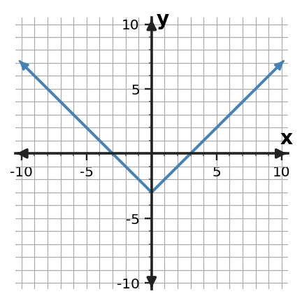

1. Classify $y=-4x+1$.
| x | y |
|---|---|
| 0 | 2 |
| 1 | 6 |
| 2 | 18 |
2. Classify the family and cite evidence.
3. Extend the quadratic pattern 1, 4, 9, 16 with the next value.

4. Classify the graph.
5. A population is multiplied by 1.08 each year. Choose the family.
| x | y |
|---|---|
| 0 | 0 |
| 1 | 1 |
| 2 | 4 |
| 3 | 9 |
6. A student says the relationship is linear. Critique the claim.